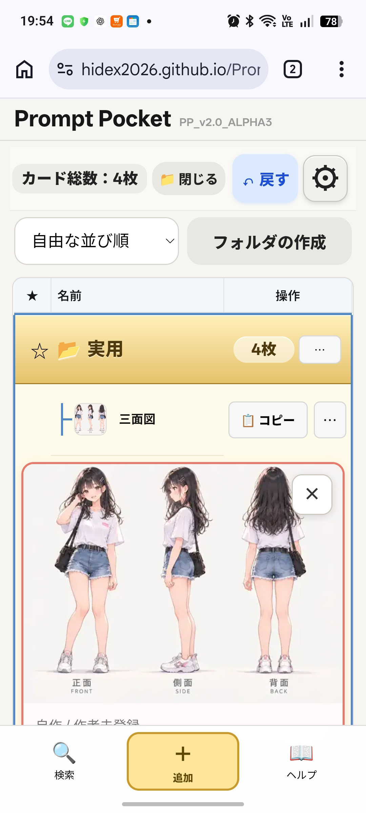

カードを追加する

画面下の［＋追加］をタップすると、登録画面が開きます。
コピーした文字を使う場合は、［＋追加］を長押しします。詳しくはカードの作り方へ。
やりたいことから見てみましょう。画像の青い枠は、操作する場所を示しています。ヘルプ内の画像は操作できません。
プロンプトを登録したものを「プロンプトカード」（以下、カード）と呼びます。本文と一緒に、名前や参考画像、メモなどを保存できます。

画面下の［＋追加］をタップすると、登録画面が開きます。
コピーした文字を使う場合は、［＋追加］を長押しします。詳しくはカードの作り方へ。
［コピー］をタップすると、プロンプトの本文をコピーできます。使いたいAIサービスなどに切り替えて貼り付けてください。
カード名をタップすると、画像・本文などを表示するカードビューワが開きます。ビューワの［×］で閉じます。
カード右端の［･･･］→［編集］で内容を変更できます。［複製］では、元のカードを残したままコピーを作れます。
タップで開かない場合は、オプションのダブルタップ設定を確認してください。カードの小さな画像自体ではなく、カード名を操作してください。
登録方法は2種類あります。「半自動」「マニュアル」は操作方法の呼び方で、モードを切り替える設定はありません。
詳細設定では、作者・タグ・メモなどを付けて整理できます。公開元の情報も残しておくと、後で見返すときに便利です。
クリップボードの読み取りにはブラウザの許可が必要な場合があります。読み取れない場合も、入力欄を長押しして貼り付けたり、画像ファイルを選んだりして登録できます。
編集をやめるときは［キャンセル］または［×］を押します。内容が変わっている場合は、保存せず閉じてよいか確認が表示されます。
フォルダは、カードを用途別にまとめるための入れ物です。「イラスト」「文章」「仕事」など、好きな名前を付けられます。
［フォルダの作成］を押し、名前を入力して作成します。カードの入れ方は移動方法をご覧ください。
フォルダ名をタップすると、中のカードを開いたり閉じたりできます。枚数の表示で、中のカード数を確認できます。
フォルダ右端の［･･･］から名前の変更や削除ができます。上部の［📁 閉じる］で、開いているフォルダやカードの表示をまとめて閉じられます。
フォルダを削除すると、中のカードも削除されます。確認画面をよく読み、大切な内容は先にバックアップしてください。
押したまま動かし、移動先で離す操作を「ドラッグ＆ドロップ（D&D）」と呼びます。
スマートフォンでは、名前部分やその周りの空白、または［･･･］を長押ししてから動かします。PCでは左ボタンで押したままドラッグします。画像や［コピー］、★は移動の開始場所にしないでください。
指やマウスを離さず上下に動かし、黒い線が目的の場所に出たら離します。並び替え後は「自由な並び順」になります。
カードをフォルダに重ね、移動先として強調されたことを確認して離すと、そのフォルダに入ります。フォルダの中でも、黒い線を目印に並び替えられます。
外へ出すときは、ドラッグ中の［フォルダの外へ移動］を使います。カードの［･･･］から［フォルダから出す］を選ぶ方法もあり、この場合は元のフォルダのすぐ下に表示されます。
移動を間違えた場合は、直後に［↶ 戻す］で元に戻せます。
左側の☆をタップすると★（お気に入り）になります。もう一度タップすると解除できます。
並び順で「お気に入り優先」を選ぶと、よく使うものを見つけやすくなります。★付きフォルダを優先して上に表示し、その中のカードもフォルダと一緒に表示します。
フォルダ内のカードには☆・★の操作を表示しません。フォルダの★でまとめて扱います。カードをフォルダの外に出すと、そのカードの☆・★操作が再び表示されます。
画面上部の並び順から、自由な並び順・フォルダを先頭・新しい順・名前順・お気に入り優先を選べます。表の見出しの［★］や［名前］からも並び替えられます。
自動保存とバックアップは別です。カードは使っているブラウザ内に保存されます。自動でクラウドに同期されるわけではありません。ブラウザのデータ削除や端末の故障に備え、ファイルに書き出して保管してください。
バックアップには、カード・フォルダ・保存画像・設定などが含まれます。通常は端末の「ダウンロード」に保存されますが、保存先はブラウザや端末の設定によって異なります。ブラウザのダウンロード一覧やファイル管理アプリで確認してください。
「ダウンロードを開始しました」という表示だけで安心せず、実際にファイルが保存されたか確認しましょう。大切なバックアップはPCや自分のクラウドストレージなど、別の場所にもコピーしておくと安心です。ファイルにはプロンプトや画像が入るため、共有先にも注意してください。
読み込みは追加ではなく、現在のデータの置き換えです。間違えた場合は読み込み直後に［↶ 戻す］が使えますが、それだけに頼らず、読み込み前のバックアップも残してください。
古い端末で書き出したJSONファイルを、新しい端末に自分で移します。新しい端末でPrompt Pocketを開き、［データを読み込む］からそのファイルを選びます。同じ端末でも、別のブラウザには自動でデータは引き継がれません。
大幅な整理・削除の前や、機種変更の前にはバックアップを取りましょう。
表の「名前」と「操作」の間の境界線にマウスを合わせ、左右の矢印になったら押したまま左右へ動かします。カード名の表示幅を調整できます。スマートフォンの狭い画面では使いません。
カードの［･･･］→［削除］で、そのカードを削除します。フォルダの削除では中のカードも削除されます。大切なものは先にバックアップしてください。
オプションの［データの初期化］・［全データの完全消去］は、一枚のカードを削除する操作とは異なります。登録データ全体を消す操作なので、確認画面の説明をよく読んでください。
ブラウザのクリップボード権限を確認してください。許可できない場合は、入力欄の長押し・手動貼り付けや画像ファイルの選択を使えます。
検索・タグの条件を解除し、フォルダを開いて確認してください。別のブラウザや端末を使っている場合は、元のブラウザのバックアップを読み込む必要があります。
編集中の内容を保存してから［再読み込み］を押し、メイン画面のバージョン表示を確認してください。更新ファイルがまだ揃っていない場合は、オンラインで少し待ってから再度お試しください。
ブラウザのダウンロード一覧、端末のダウンロードフォルダ、保存時に指定した場所を確認してください。書き出しに失敗した案内が出ていた場合は、もう一度書き出してください。
このヘルプは［ヘルプ］→［もっと詳しく］から開けます。［チュートリアルを表示］では基本の登録手順を見直せます。再表示しても初期カードは増えません。
対応バージョン：PP_v2.0_ALPHA3a